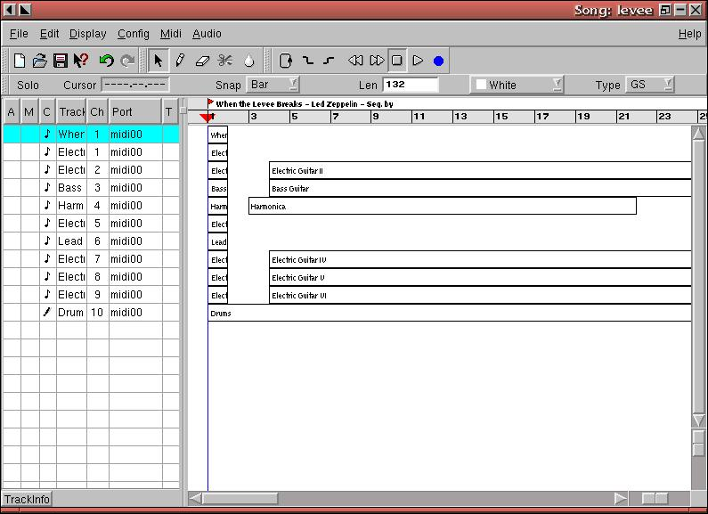
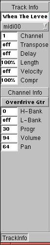

The main window is basically divided up into two panes separated by a veritcal bar that is movable horizontally. These two panes together are called the Arranger.
The left pane of the Arranger describes each track in detail, while the right pane describes each track graphically.

The left pane details the following information for each track:
When a track's M column is clicked, that track is marked as Muted with a red circle and upon playback that track will not be heard. To hear the track, click on the M column for that track again.
Right click on the C column for a track to declare the track to be of type MIDI, Drum or Wave.
The Track column is free-form, meaning that a double-click on a track's Track column will allow you to enter a descriptive name for the track, for example "Hot Lead Guitar".
The Ch column for a track is changed by right-clicking to increment the number or middle-clicking to decrement the number. It's generally a good idea to keep differing instruments on different MIDI channels and it's considered common to have the drum kit on channel 10.
At the bottom of the left pane, you'll see a little button labelled "TrackInfo". When clicked, the standard information plus more about the currently selected track is presented:

Operations that can be performed on the left pane:
| Track Functions | |
|---|---|
| Select Track |
|
| Select multiple Tracks |
|
| Change Selected Track |
|
| Move Track |
|
| Create New Track |
|
| Delete selected Track(s) |
|
| Rename Track |
|
| Change Midi Channel |
|
| Select Midi Port |
|
| Mute Track |
|
| Solo Track |
|
The right pane desribes each track graphically. Time moves from left to right and is measured in beats that are referenced at the top of the right pane. Tracks are displayed vertically in boxes, called "Parts", that depict where MIDI and audio data are played.
The small sliders that are adjacent to the bottom right corner affect the view of the right pane in terms of "zooming". The vertical slider affects the height of the tracks, while the horizontal slider affects the width.
Operations that can be performed on the right pane:
| To do this... | ...Do this |
| Select Part | Left Click |
| Select multiple parts | Shift + left click |
| Change selected track | Key left: previous part, Key right: next part |
| Move part | Drag with left mouse button |
| Create new part | select Pencil tool; draw with left mouse button pressed, OR set left and right mark; double click on track |
| Delete selected part(s) | select rubber tool; click part to delete |
| Rename part | double click with left mouse button on part |
| Copy part | drag with shift + left mouse button |
| Cut part | select Cut Tool; click on part to cut |
| Glue part | select Glue Tool; click on part to glue with next part |

Across the top, above the Arranger, are a menu system, icons and other widgets that you use to manipulate your project. Most of these are self-explanatory, while others are described later in this document.